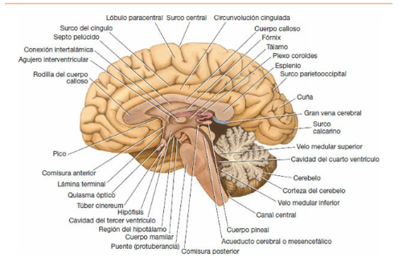

Neuroanatomía - Resumen
Josefina Arcagni
11/14/2020
- Introducción
- Receptores
- Médula Espinal
- Cerebro
- Corteza Cerebral
- Sistema Límbico
- Los Núcleos Basales
- Pares Craneales
- Órganos de los Sentidos
- El Tálamo
- El Hipotálamo
- El Sistema Nervioso Autónomo
- Vía Piramidal y Extrapiramidal
- Sistema Ventricular y Líquido Cefalorraquídeo
- Irrigación del Encéfalo y de la Médula Espinal
- Bibliografía
Introducción
El sistema nervioso se divide en dos partes principales:
el sistema nervioso central que consta del encéfalo y médula espinal
el sistema nervioso periférico que consta de los nervios craneales y raquídeos y sus ganglios asociados.
Tanto el encéfalo como la médula espinal se hallan cubiertos por un sistema de membranas denominadas meninges y están suspendidos en el líquido cefalorraquídeo:. Están protegidas ademas por los huesos del cráneo y la columna vertebral.
Las células nerviosas excitables se denominan neuronas, se hallan sostenidos por el tejido neuroglía, y sus prolongaciones se denominan axones/fibras nerviosas.
El interior está organizado en * sustancia gris, cuerpos de las neuronas * y sustancia blanca, fibras nerviosas.
En el sistema nervioso perisférico los nervios craneales y raquídeos constan de fibras nerviosas.
El sistema nervioso autónomo es la parte del sistema nervioso central implicado en la inervación de las estructuras involuntarias como el corazón músculo liso y glándulas. Se distribuye por el sistema nervioso central y perisférico. Se divide en dos partes, * la simpática, que prepara al cuerpo para una emergencia * y parasimpática, que conserva y restaura la energía.
Principales Divisiones del Sistema Nervioso Central
Médula espinal
La médula espinal está situada dentro del canal vertebral y está rodeada por tres meninges; la duramadre y la aracnoides y la piamadre. Es cilíndrica, comienza en el agujero occipital y continúa con la médula oblongada del encéfalo, termina por la parte inferior en la región lumbar. Por debajo de la médula espinal se afila el cono medular donde desciende una prolongación de pía madre; el filum terminal.
A lo largo de toda la médula espinal figuran 31 pares de nervios raquídeos por las raíces anteriores motoras y las raíces posteriores sensitivas. Cada raíz nerviosa posterior posee un ganglio espinal situado en la raíz posterior cuyas células dan lugar a fibras nerviosas periféricas y centrales.
Encéfalo
El encéfalo está situado en la cavidad craneal y se continúa con la médula espinal a través del agujero occipital está rodeado por las meninges. El líquido cefalorraquídeo rodea el encéfalo en el espacio subaracnoideo. Se divide en el rombencéfalo, mesencéfalo y prosencéfalo.
Rombencéfalo: médula oblongada (con muchos núcleos, conducto de fibras), puente (fibras transversales, núcleos y fibras nerviosas ascendentes y descendentes), Cerebelo (dos hemisferios conectados por el vermis, conectado al mesensencéfalo por los pedúnculos cerebelosos superiores, al puente por los pedñunculos cerebelosos medios y a la médula oblongada por los pedúnculos cerebelosos inferiores, capa superficial -> corteza, núcleo dentado -> masa mayor de sustancia gris).
Mesencéfalo: Es la parte estrecha del encéfalo, conecta el prosencéfalo con el rombencéfalo. La cavidad estrecha del mes encéfalo es el acueducto cerebral que conecta el tercer y cuarto ventrículos. Contiene núcleos y fibras.
Diencéfalo: tálamo dorsal e hipotálamo ventral. Límite posterior del agujero inerventricular y los ventrículos. El hipotálamo forma la parte inferior de la pared lateral y del suelo del tercer ventrículo.
Cerebro: Es la mayor parte del encéfalo consta de dos hemisferios cerebrales que se conectan por una masa de sustancia blanca denominada cuerpo calloso. Están separados por una profunda hendidura, la fisura longitudinal, en la que se proyecta la hoz del cerebro.


La capa superficial de cada hemisferio está compuesta de sustancia gris. La corteza cerebral está modelada en pliegues o circunvoluciones separadas por surcos. Los grandes surcos son utilizados para subdividir la superficie de cada hemisferio en lóbulos, que reciben su denominación por los huesos del cráneo sobre los que descansan.
Principales Divisones del Sistema Nervioso Perisférico
Nervios Craneales y Raquídeos
Compuestos de fascículos de fibras nerviosas . 12 pares de nervios craneales, 31 pares de nervios raquídeos. Cada nervio rquídeo tiene una raíz anterior (impulsos nerviosos lejos, fibras eferentes) y posterior ( fibras aferentes , impulsos al sistema nervioso central). -> fibras sensitivas
Ganglios
Ganglios sensitivos de los nervios raquídeos: tumefacciones fusiformes situadas en la raíz posterior de cada uno de los nervios raquídeos. ganglios espinales.
Ganglios de los nervios craneales y autónomos: ganglios autónomos situados a lo largo de las fibras nerviosas eferentes. Cadenas simpáticas paravertebrales, etc.
Receptores
Los receptores sensitivos pueden clasificarse en cinco tipos funcionales básicos: * Mecanorreceptores. Responden a la deformación mecánica. * Termorreceptores. Responden a los cambios de temperatura; algunos receptores responden al frío y otros al calor. * Nociceptores. Responden a cualquier estímulo que causa daño en el tejido. * Receptores electromagnéticos. Los conos y los bastones de los ojos son sensibles a los cambios en la intensidad de la luz y a la longitud de onda. * Quimiorreceptores. Responden a los cambios químicos asociados con el gusto y el olfato, y a las concentraciones de oxígeno y de dióxido de carbono en la sangre.

Médula Espinal
La médula espinal se compone un núcleo interno de sustancia gris rodeada de una cubierta externa de sustancia blanca.
Con respecto a la estructura, como en otras regiones del sistema nervioso central, la sustancia gris de la médula espinal consiste en una mezcla de células nerviosas y sus prolongaciones, neuroglía y vasos sanguíneos.
La sustancia blanca de la médula espinal consiste en una mezcla de fibras nerviosas, neuroglia y vasos sanguíneos.Rrodea la sustancia gris.
Estos fascículos de fibras nerviosas se dividen en ascendentes, descendentes e intersegmentaríos.
Vías Ascendentes
Éstas vías conducen información que puede alcanzar o no el nivel de la conciencia. Se puede dividir en dos grupos principales; la información esteroceptiva que se origina fuera del cuerpo (temperatura, solor etc) y la información propioceptiva que se origina en el interior del cuerpo (músculos, articulaciones).
La vía ascendente consiste en tres neuronas:
la neurona de primer orden tiene su cuerpo celular en el ganglio espinal posterior del nervio raquídeo, una prolongación periférica conecta con una terminación recpetora sensitiva, mintras que una terminación central penetra a través de la raíz posterior para formar sinapsis con la neurona de segundo orden.
La neurona de segundo orden da lugar a un axon que se decusa y asciende a un nivel más alto del sistema nervioso central donde establece sinapsis con la neurona de tercer orden.
La neurona de tercer orden que está en el tálamo y da una proyección que llega a una región sensitiva de la corteza cerebral.
Funciones:
Vías del dolor o la temperatura ( fascículo o haz espinotalámico lateral) Los receptores del dolor y de la temperatura de la piel y de otros tejidos son terminaciones nerviosas libres. Los impulsos dolorosos son transmitidos a la médula espinal por fibras de tipo A-tita de conducción rápida y por fibras de tipo C de conducción lenta. Las fibras de conducción rápida alertan a la persona del dolor agudo inicial mientras que las fibras de conducción lenta son responsables del dolor urente prolongado. El calor se desplaza también por las fibras A-delta y C. Ramas forman el fascículo posterolateral de Lissauer. Se cree que la sustancia P es el neurotransmisor de estas sinapsis. El haz, acompañado por el fascículo espinotalámico anterior y el fascículo espinotectal, forma el lemnisco espinal. Éste sigue así ascendiendo a través de la parte del puente, el mesencéfalo, muchas fibras terminan formando sinapsis con la neurona de tercer orden en el núcleo ventral posterior lateral del tálamo, mientras que los axones de las neuronas de tercer orden del núcleo ventral posterior lateral del tálamo pasan a través del brazo posterior de la cápsula interna y la corona radiada para alcanzar el área somestésica en la circunvolución poscentral de la corteza cerebral.
Recepción del dolor Hay dos tipos principales dolor rápido (axones tita-A) y dolor lento (axones C). Las fibras aferentes del dolor penetran en la médula espinal en las raíces posteriores de un nervio raquídeo y terminan predominantemente en las capas superficiales del cordón gris posterior. Los impulsos de dolor rápido se desplazan directamente hasta el núcleo ventral posterior lateral del tálamo, y ñuego a la corteza cerbebral. La fibras de dolor lento en el haz espinotalámica colateral terminan en la formación reticular que activa al sistema nervioso completo, se recibe en las áreas infreiores del encéfalo.
Control del dolor en el sistema nervioso central La estimulación de ciertas áreas del tallo cerebral puede reducir o bloquear las sensaciones de dolor. Estas zonas incluyen el área periventricular del diencéfalo, la sustancia gris periacueductal del mesencéfalo, y los núcleos de la línea media del tallo cerebral.
Vías del tacto leve y de la presión La apreciación consciente del tacto y de la presión depende de la actividad de la corteza cerebral, y se localizan de forma aproximada.
Tacto discriminativo, sentido de la vibración y sensibilidad consciente muscular y articular Las fibras ascendentes largas terminan en sinapsis con las células del cordón gris posterior, etc. Está suben como fascículo grácil (fibras ascendentes largas de nervios raquídeos sacros, lumbares y dorsales) y fascículo cuneiforme (fibras de dorsales, torácicos y cervicales)
Vías por las que llega al cerebelo la sensibilidad articular y muscular fascículo espinocerebeloso posterior, y fascículo espinocerebroso anterior.
Otros Fascículo espinotectal, fascículo espinoreticular, fascículo espinoolivar.
Fascículos sensitivos viscerales Las sensaciones originadas en las vísceras y el abdomen llevan a la médula espinal a través de las raíces posteriores terminan sobre neuronas de tercer orden en el núcleo ventral posterior lateral del tálamo, su destino final en la circunvolución poscentral de la corteza cerebral.

Vías Descendentes
Las motoneuronas situadas en los cordones grises anteriores de la médula espinal envían axones para inervan los músculos esqueléticos a través de las raíces anteriores de los nervios raquídeos. Se denominan motoneuronas inferiores y constituyen la vía final común hacia los músculos.
Los impulsos nerviosos descienden por la médula oblongada, el puente, el mesencéfalo y la corteza posteriores.
Neurona de primer orden tiene su cuerpo celular en la corteza cerebral.
Neurona de segundo orden es internuncial situada en el cordón gris.
Neurona de tercer orden notoneurona infreior, inerva el músculo esquelético a través de la raíz anterior y el nervio raquídeo.
Los fascículos corticoespinales constituyen las vías participantes en los movimientos voluntarios, aislados y especializados, mientras que los fascículos restículoespinales pueden fascilitar o inhibir la actividad de las neuronas, y consecuentemente inhibir o facilitar el movimiento voluntario o la actividad refleja. ejemplo: El fascículo tectoespinal está relacionado con los movimientos posturales reflejos como respuesta a los estímulos visuales. El fascículo olivoespinal puede desempeñar un papel en la actividad muscular. Las fibras autonómicas descendentes están relacionadas con el control de la actividad visceral.
Fascículos corticoespinales axones de las células piramidales en la quinta parte de la corteza cerebral.
Fascículos retículoespinales
Fascículo tectoespinal
Fascículo rubroespinal núcleo rojo
Fascículo vestíbuloespinal
Fascículo olivoespinal
Fibras autónomas descendentes
Fascículos intersegmentarios
Arco reflejo monosinaptíco, respuesta involuntaria a un estímulo a) órgano receptor b) neurona aferente c) neurona efectora d) órgano efector
# El Cerebelo
Está situado en la fosa craneal posterior , cubierto por la tienda del cerebelo. Es la parte más grande del rombencéfalo. Consiste en dos hemisferios cerebelosos. Tres lóbulos: anterior, medio y floculonodular, separados por la fisura prima, uvulonodular y primaria. Conectado por fibras nerviosoas: pedúnculos cerebelosos superiores, medios e inferiores.
Cobertura de sustancia gris corteza [capa externa, celulas de Purkinje, capa interna o granulosa]y de sustancia blanca interna, con núcleos intracerebelosos (masas de sustancia gris).
Mecanismos cerebelosos corticales
- Mecanismos básicos son atribuidos a la corteza del cerebro
- Las fibras trepadoras (terminales de fas. olivocerbelosos) y las mugosas (fibras terminales de todos los demás tractos aferentes cerebelosos)
- Mecanismos nucleares intracerebelosos: núcleos reciben información de axones inhibidores de célular de Purkinjke y los axones excitadores.
- Neurotransmisores corticales cerbelosos: excitación de las celulas de Purkinje.
- Pedúnculos cerbelosos: pedúnculos cerebelosos superiores conectan con el mesencéfalo, los medios con el puente, e inferiores con la médula oblongada.
Fibras aferentes cerebelosas:
Desde la corteza cerebral: via corticopontocerebelosa, via cerebroolivocerebelosa, cvia erebrorreticulocerebelosa.
De la médula espinal: fas. espinocerebeloso anterior, posterioe, fas. cuneocerebeloso
Del nervio vestibular
Fibras eferentes cerebelosas:
- Vía globosoemboliformerubral
- Vía dentotalámica
- Vía fastigovestibular
- Vía fastigorreticular
El cerebelo recibe información aferente respecto al movimiento voluntario desde la corteza cerebral y desde los músculos, los tendones y las articulaciones. También recibe información referente al equilibrio desde el nervio vestibular. La referencia cerebelosa es conducida a los sitios de origen de las vías descendentes que influyen en la actividad motora en el nivel espinal segmentario.
Cerebro
El cerbero repsresenta la mayor parte del encéfalo, se sitúa en las fosas craneales anterior y edia del cráneo y ocupa toda la concavidad de la calvaria. Se divide en el diencéfalo y el telencéfalo.
Diencéfalo
Consta del tercer ventrículo y las estructuras que forman sus límites. Mitad derecha e izquierda.
La superficie inferior (expuesta en el encéfalo) está formada por estructuras hipotalámicas, el quiasma óptico, el infundíbulo, y los cuerpos mamilares.
La superficie superior (cubierta por el fórnix) es un haz grueso de fibras generado en el hipocampo del lóbulo temporal y se arquea hacia atrás sobre el tálamo.
La superficie lateral está limitada por la cápsula interna de sustancia blanca y está fromada por fibras nerviosas que conctan con otras partes del tallo cerebral y la médula espinal.
La superficie medial formasa por el tálamo (superior) y por el hipotálamo (inferior), separadas por el surco hipotalámico.
Tálamo
Una gran masa ovoide de sustenacia gris que forma la mayor parte del diencéfalo. Es de gran importancia funcional y sirve como estación de intercambio para la mayoría de los sistemas sensitivos principales (menos la olfatoria). Situado al lado del tercer ventrículo, El extemo posterior forma el pulvinar. El cuerpo geniculado lateral forma una pequeña elevación sobre el pulvinar.
El subtálamo se encuentra por debajo del tálamo (entre el tálamo y el tegmento del mesencéfalo), tiene los extremos craneales de los núcleos rojos y la sustancia negra; participa en el control de la actividad muscular.
El epitálamo está formado por núcleos habenulares y la glándula pineal.
El hipotálamo por debajo del surco del hipotálamo(pared lateral del tercer ventrículo). Controla e integra las funciones del sistema nervioso autónomo y el sistema endocrino, y mentiene la homeostasia del organismo.
Tercer ventrículo
Hendidura entre los dos tálamos, se comunica hacia adelante con los ventrículos laterales a través de los agujeros intraventriculares, y por detrás con el cuarto ventrículo a través del acueducto cerebral.
Hemisferios Cerebrales
Los hemisferios cerebrales ocupan la mayor parte del encéfalo están separadas por surco sagital profundo, el surco longitudinal cerebral, que contiene el pliegue de duramadre, la hoz del cerebro y las arterias cerebrales anteriores. El cuerpo calloso conecta a ambos hemisferios. Un segundo pliegue separa los hemisferios del cerebelo y forma el tenorio(tienda) del cerebelo.
La superficie del hemisferio cerebral se introfuce en circunvoluciones, separados por surcos.
Los surcos central, parietooccipital, laterales, calcarinos separan en lóbulos frontales, parietales, temporales y occipitales.
Los núcleos basales son una colección de masas de sustancia gris situada en cada hemisferio cerebral. Son el cuerpo estriado, amigdalino y el claustro.
Corteza Cerebral
Recubre por completo cada hemisferio cerebral. Está formada por sustancia gris está formada por una mezcla de células nerviosas neuroglia y vasos sanguíneos. Se encuentran células piramidales, células estrelladas, células fusiformes, células horizontales de Cajal y células de Martinoti.
Las fibras nerviosas radiales se dirigen en ángulo recto hacia la superficie cortical, son fibras de proyección aferentes. Las fibras tangenciales se dirigen hacia la superficie cortical, y son ramas colaterales y terminales de las fibras aferentes.
La corteza cerebral está organizada en unidades verticales o columnas de actividad funcional. Ejemplo en la corteza sensitiva cada columna tiene una única función sensitiva específica. Cada unidad posee fibras aferentes, neuronas internunciales y fibras eferentes.
principales conexiones anatómias de la corteza cerebral
- Lóbulo Frontal se encarga de los movimientos
- Lóbulo Parietal recibe sensaciones.
- Lóbulo Occipital recibe fibras aferentes, area visual.
- Lóbulo Temporal area auditiva, area sensitiva del lenguaje.
- otras áreas corticales area del gusto, area vestibular, la ínsula
Sistema Límbico
Es el grupo de estructuras que se encuentra en la zona límite entre la corteza cerebral y el hipotálamo. Controla la emoción la conducta y los impulsos. La formación del hipocampo consta del hipocampo, la circunvolución dentada y la circunvolución del parahipocampo.
Las vías de conexión del sistema límbico son el alivio la fimbria el fórnix el fascículo mamilotalámico y la estría terminal.
La estructura cortical de la circonvolución del parahipocampo consta de seis capas. La circunvolución dentada tiene tres capas.
Conexiones aferentes:
- Las fibras que surgen de la circunvolución del cíngulo y se dirigen hacia el hipocampo
- Las fibras que surgen de los núcleos septales que pasan por detrás del fórnix hacia el hipocampo.
- Las fibras que surgen de un hipocampo y atraviesan la línea media hacia el hipocampo contrario en la comisura del fórnix.
- Las fibras que proceden del indusium griseum y se trasladan a través de la porción posterior de las estrías longitudinales hacia el hipocampo.
- Las fibras que proceden del área entorrinal o la corteza relacionada con el área olfatoria y se dirigen hacia el hipocampo.
- Las fibras que surgen de las circunvoluciones dentada y del parahipocampo y se dirigen hacia el hipocampo.
Conexiones eferentes:
- Las fibras que se dirigen desde la zona posterior hacia la comisura anterior para penetrar en el cuerpo mamilar donde terminan en el núcleo medial.
- Las fibras que se dirigen desde la zona posterior hacia la comisura anterior para terminar en los núcleos anteriores del tálamo.
- Las fibras que se dirigen desde la zona posterior hacia la comisura anterior para penetrar en el tegmento del mes encéfalo.
- Las fibras que se dirigen desde la zona anterior hacia la comisura anterior para terminar en los núcleos septales el área pre óptica lateral y la parte anterior del hipotálamo.
- Las fibras que se unen en la estría medular del tálamo para alcanzar los núcleos habenulares.
El sistema límbico a través del hipotálamo y sus conexiones con el tracto de salida del sistema nervioso autónomo y su función de control del sistema endocrino, es capaz de influir en muchos aspectos de la conducta emocional.
Los Núcleos Basales
Desempeñan un papel importante en el control de la postura y del movimiento voluntario. Son un conjunto de sustancia gris situadas dentro de cada hemisferio cerebral.
Cuerpo Estriado
Se halla situado lateral al tálamo y está dividido por una banda de fibras nerviosas, la cápsula interna, formándose el núcleo caudado y el núcleo lenticular.
- Núcleo caudado una gran masa en forma de c de sustancia gris relacionada con el ventrículo lateral, lateral al tálamo.
- Núcleo lenticular masa de sustancia gris en forma de cuña, en la sustancia blanca del hemisferio cerebral, se relaciona medialmente con la cápsula interna.
Núcleo Amigdalino
Situado en el lóbulo temporal. Forma parte del sistema límbico. Influye en la respuesta del organismo a un cabio ambiental.
Sustancia Negra y Núcleos Subtalámicos
Relacionados con la actividad de los ganglios basales. Dopaminérgicas e inhibidoras, conexiones con el cuerpo estriado.
Claustro
Fina lámina de sustancia gris separada del núcleo lenticular por la cápsula externa.
Conexiones del Cuerpo Estriado
Fibras aferentes:
- corticoestriadas: corteza sensitomotora.
- talamoestriadas: envían axones al núcleo caudado y al putamen
- nigroestriadas: axones al núcleo caudado y al putamen y liberan dopamina, función inhibidora
- fibras estriadas del tallo cerebral: liberan serotonina, función inhibidora
Fibras eferentes:
- estriatopalidales: GABA como neurotransmisor
- estriatoníngricas: GABA/acetilcolina como neurotransmisor
Conexiones del globo pálido: fibras estriatopalidales (aferentes), fibras palidosfugales (eferentes).
Los ganglios basales se hallan unidos entre sí y conectados con muchas regiones diferentes el sistema nervioso mediante un número de neuronas muy complejo. El cuerpo estriado recibe información aferente de la mayor parte de la corteza cerebral, el tálamo, el subtálamo y el tallo cerebral incluyendo la sustancia negra. La información se integra dentro del cuerpo estriado y el flujo de las salidas vuelve hacia atrás a las áreas citadas anteriormente. La actividad de los núcleos basales inicia a partir de la información recibida de las áreas pre motora y suplementaria de la corteza motora, la corteza sensitiva primaria, el tálamo y el tallo cerebral. La eferencia a partir de los núcleos basales se canaliza a través del globo pálido que después influye sobre las actividades de las áreas motoras de la corteza cerebral o de otros centros motores en el tallo cerebral. Regulan el movimiento voluntario y aprendizaje de las áreas motoras.

Pares Craneales
Existen 12 pares de nervios craneales que salen del cerebro y pasan a través de orificios y fisuras en el cráneo.
- Olfatorio
- Óptico
- Oculomotor
- Troclear
- Trigémino
- Abducens
- Facial
- Vestibulococlear
- Glosofaríngeo
- Vago
- Accesorio
- Hipogloso
- Totalmente sensitivos: olfatorio, óptico y estibulococlear.
- Completamente motores: oculomotor, troclear, abducens, accesorio e hipogloso.
- Sensitivos y motores: trigémino, facial, glosofaríngeo y vago.
Las fibras nerviosas motoras somáticas y braquiomotoras de un par craneal son los axones de las células nerviosas situadas dentro del cerebro. Cada célula nerviosa con sus prolongaciones se denomina motoneurona inferior. Los núcleos motores de los pares craneales reciben impulsos de la corteza cerebral a través de fibras córticonucleares.
Los núcleos motores viscerales generales forman la deferencia craneal de la porción para simpática del sistema nervioso autónomo.
Los núcleos sensitivos de los pares craneales incluyen los núcleos aferente somáticos y viscerales las partes sensitivas o aferentes de un par craneal. Son los axones de las células nerviosas situadas fuera del cerebro y se localizan en los ganglios de los troncos nerviosos o pueden estar situadas en un órgano sensitivo; como la nariz, el ojo, o el oído.
Nervio Trigémino (V)
Es el par craneal más grande y contiene fibras tanto sensitivas como motoras. Es el nervio sensitivo de la mayor parte de la cabeza y el nervio motor de varios músculos incluidos los de la masticación.
Núcleos: el núcleo sensitivo principal[parte posterior del puente], el núcleo espinal[encima del sensitivo principal], el núcleo mesencefálico[alrededor del acueducto cerebral], el núcleo motor[en la protuberancia del puente].
Componente sensitivo: Las sensaciones de dolor, temperatura, tacto y presión de la piel de la cara y de las membranas mucosas tienen un trayecto a lo largo de acciones cuyos cuerpos celulares están situados en el ganglio semilunar o sensitivo del trigémino.
Componente motor: El núcleo motor recibe fibras córtico nucleares de ambos hemisferios cerebrales, también recibe fibras de la formación reticular, el núcleo rojo, el techo, y el fascículo longitudinal medial. Además recibe fibras del núcleo mesencefálico formando de este modo un arco reflejo monosináptico. El núcleo motor inerva los músculos de la masticación, el tensor del tímpano, el tensor del velo del paladar, el milohioideo y el vientre anterior del músculo digástrico.
Trayecto: Abandona la cara anterior del puente como una pequeña raíz motora y una gran raíz sensitiva se dirige hacia delante saliendo de la fosa craneal posterior y descansa sobre la superficie superior del vértice de la parte petrosas del hueso temporal en la fosa craneal media. Forma el ganglio trigeminal. Los nervios oftálmico, maxilar, y mandibular surgen del borde anterior.
(V1) Oftálmico: fibras sensitivas. Hendidura orbitaria, y penetra la cavidad orbitaria. (V2) Maxilar: fibras sensitivas Orificio redondo. (V3) Mandibular: fibras sensitivas y motoras. Orificio oval.
Nervio Facial (VII)
Es motor y sensitivo
Núcleos: El núcleo motor principal[protuberancia, formación reticular], los núcleos parasimpáticos[fuera del núcleo principal motor], el núcleo sensitivo[núcleo del tracto solitario].
Trayecto: Consta de una raíz motora y una raíz sensitiva. Las fibras de la raíz motora tienen un trayecto primero hacia atrás, alrededor de la cara medial del núcleo del nervio abducens. Después pasan alrededor del núcleo por debajo del colículo facial en el piso del cuarto ventrículo, y finalmente pasan en dirección anterior hasta emerger fuera del tallo cerebral.
Núcleo motor: inerva los músculos de la expresión facial, los músculos auriculares, el estribo, el vientre posterior del digástrico y el músculo estilohioideo.
Núcleo salival superior: inerva las glándulas salivales submandibulares y sublingual y las glándulas salivales nasales y palatinas.
Núcleo lagrimal: inerva la glándula lagrimal.
Núcleo sensitivo: recibe fibras del gusto de los dos tercios anteriores de la lengua, del piso de la boca y del paladar.
Nervio Hipogloso (XII)
Nervio motor que inerva todos los músculos intrínsecos de la lengua, y el estilogloso, hipogloso y geniogloso.
Núcleo Hipogloso: Se haya situado cerca de la línea media debajo de la parte inferior del cuarto ventrículo. Recibe fibras corticonucleares de ambos hemisferios cerebrales. Pasan anteriormente a través de la médula oblongada y emergen como una serie de raíces en el surco situado entre la pirámide y la oliva.
Trayecto: Emergen en la superficie anterior de la médula oblongada entre la pirámide y la oliva cruza la fosa craneal posterior y abandona el cráneo a través del canal hipogloso.
Órganos de los Sentidos
Ojo y Vía Óptica
El área visual ocupa los dos labios del surco calcarino situado en la cara medial del lóbulo occipital del cerebro. Las dos áreas visuales derecha izquierda están unidas por fibras que pasan por el esplenio del cuerpo calloso. Por el tubérculo cuadrigémino superior las fibras de la vía óptica llegan al fascículo longitudinal dorsal que las ponen conexión con los diferentes núcleos de los nervios craneales en particular con los nervios oculomotores.
Vestíbulo y Cóclea
Vestibulares
Son las vías responsables sentido del equilibrio estático y cinético. Conectan el aparato vestibular con el cerebelo.
Neurona periférica: Su cuerpo celular se encuentra en el ganglio vestibular en el extremo lateral del conducto auditivo interno y recibe una porción superior una porción inferior del nervio vestibular. Las fibras que salen del ganglio constituyen el nervio vestibular que junto con el nervio coclear forman el octavo nervio craneal.
La segunda neurona de la vía vestibular, partiendo desde los núcleos vestibulares, se orientan en diferentes direcciones; hacia el cerebelo, hacia la médula espinal y hacia los centros superiores.
Cocleares
Están formadas por diversas estructuras que son las responsables de conducir los sonidos del medio externo hasta las áreas corticales de la audición.
El órgano espiral es el órgano receptor. Está constituido por las células de Corti, que son las encargadas de percibir a través de sus esterocilios las vibraciones generadas por las diferencias de presión entre rampa vestibular y timpánica.
La neurona periferica se localiza en el oído interno y su cuerpo celular en el ganglio espiral de la cóclea.
Los núcleos cocleares (ventral y dorsal) tienen fibras eferentes. Si provienen del núcleo coclear ventral se dirigen medialmente al puente donde forman el cuerpo trapezoide. Si provienen del núcleo coclear dorsal rodean el cuerpo restiforme por su cara posterior y llegando al plano mediano forman las estrías medulares.
Centros auditivos primarios:
El colículo inferior es alavés un centro auditivo y de pasaje.
- Centro. El centro recibe las fibras cortas del lemnisco lateral; estas hacen conexiones dirección de los centros inferiores y constituyen una vía refleja a través del fascículo longitudinal dorsal.
- Fibras Largas. Las fibras largas del lemnisco lateral pasan directamente al brazo del colículo inferior que las conduce al cuerpo geniculado medial, donde encuentran el cuerpo celular de la tercera neurona. Esta es la vía sensitiva propiamente dicha; las fibras de la tercera neurona forman la radiación acústica que pasa debajo del tálamo y por el segmento sublenticular de la cápsula interna para llegar a la corteza del lóbulo temporal.
Centros corticales:
La cuarta neurona es cortical. Las áreas corticales auditivas primarias están situadas en los giros temporales transversos.
El Tálamo
Es una gran masa ovoide de materia gris que forma la mayor parte del diencéfalo. Existen dos estábamos cada uno si todo acá al lado del tercer ventrículo.
Está cubierto en su superficie superior por una delgada capa de materia blanca denominada capa zonal. En su superficie lateral por otra capa, la lámina medular externa. La materia gris del tálamo está dividida por una lámina vertical de materia blanca, la lámina medular interna en una mitad medial y otra lateral.
Porción anterior: Contienen los núcleos anteriores del tálamo. Estrecha relación con el sistema límbico, tono emocional y mecanismos de memoria reciente.
Porción medial: gran núcleo dorsomedial. Relación con lóbulo frontal y nucleos hipotalámicos. Información sensitiva relacionada a los sentimientos emociones y estados subjetivos.
Porción lateral: hilera dorsal[núcleo lateral dorsal, núcleo lateral posterior] y ventral[núcleo ventral anterior, núcleo ventral lateral, núcleo ventral posterior].

El Hipotálamo
Es esencial para la vida; controla el sistema nervioso autónomo y el sistema endocrino por lo que indirectamente contrólalo la homeostasia corporal.
El hipotálamo es parte del diencéfalo que se extiende desde la región del que asma óptico hasta el borde caudal de los cuerpos mamilares.
Núcleos: En la zona medial pueden reconocerse los siguientes núcleos hipotalámicos: a) parte del núcleo preóptico, b) el núcleo anterior, c) parte del núcleo supraquiasmático, d) núcleo paraventricular, e) núcleo dorsomedial, f) el núcleo ventromedial, g) núcleo infundibular y h) núcleo posterior. En la zona lateral a) parte del núcleo preóptico, b) parte del núcleo supraquiasmático, c) núcleo supraóptico, d) núcleo lateral, e) núcleo tuberomamilar, f) núcleo tuberal lateral.
El hipotálamo recibe información del resto del cuerpo a través de las conexiones nerviosas, el torrente sanguíneo, el líquido cefalorraquídeo.
El hipotálamo asume el control del sistema nervioso autónomo y parece integrar la función del sistema autónomo y el sistema neuroendocrino para, de este modo, preservar la homeostasia corporal. En esencia el hipotálamo debe considerarse como el centro nervioso superior para el control de los centros autónomos de un orden inferior situados en el tallo cerebral y en la médula espinal.
El Sistema Nervioso Autónomo
El sistema nervioso autónomo y el sistema endocrino controlan el medio interno del cuerpo. El sistema nervioso autónomo el que que permite el control preciso y fino de las funciones de muchos órganos y tejidos incluidos el músculo cardiaco, el músculo liso y las glándulas exocrinas. El sistema endocrino mediante las hormonas circulantes en la sangre ejerce un control más lento y más difuso.
El sistema nervioso autónomo se distribuye a través del sistema nervioso central y periférico se divide en dos partes el simpático y el parasimpático y está construido por fibras aferentes y eferentes.
Parte Simpática: es el mayor de las dos partes. Se distribuye a lo largo del cuerpo inervando el corazón y los pulmones, los músculos de las paredes de muchos vasos sanguíneos, los folículos pilosos y las glándulas sudoríparas, así como las vísceras abdominopélvicas. La función del sistema simpático es preparar el cuerpo para una emergencia. Y los cuerpos celulares de las neuronas conectadas simpática se encuentra en la columnas grises laterales de la médula espinal y tiene fibras nerviosas aferentes y eferentes. Los troncos simpáticos son dos troncos nerviosos con ganglios que se extienden a lo largo de toda la longitud de la columna vertebral.
Parte Parasimpática: Las actividades de la parte parasimpática del sistema autónomo están dirigidas a la conservación y recuperación de la energía; disminuye la frecuencia cardíaca, las pupilas se contraen, aumenta el peristaltismo y la actividad glandular. Las células nerviosas conectores de la parte parasimpática del sistema nervioso autónomo se localiza en el tallo cerebral y en los segmentos sacros de la médula espinal tiene fibras nerviosas eferentes y aferentes.
Efectos del sistema nervioso autónomo
Vía Piramidal y Extrapiramidal
Vía Piramidal
Son vías simples con dos neuronas solamente; la primera neurona está la corteza cerebral y la segunda neurona se encuentra en las astas anteriores de la médula espinal y en los núcleos motores somáticos de los nervios craneales. Movimientos voluntarios.
DOS CONTINGENTES DE FIBRAS MOTRICES: corticonucleares y corticoespinales.
Tractos Corticoespinales: primera neurona. Las fibras cruzan primero el centro oval se reúnen en la parte media del brazo posterior de la cápsula interna. En la parte inferior de la médula oblongada estos fascículos se dividen en dos tractos; córticoespinal anterior y el córticoespinal lateral. El tracto córtico espinal lateral cruza el plano mediano y da lugar a la decusación piramidal. En la médula espinal el tracto córticoespinal lateral ya decusado se encuentra en el cordón lateral, llegan al asta anterior de la médula espinal. segunda neurona. El cuerpo celular está en el asta anterior de la médula se trata de la motoneurona alfa sus dendritas reciben el contacto de los axones de la primera neurona su acción se introduce en la raíz anterior y luego en el nervio espinal que lo conduce al músculo correspondiente.
corticoespinales
Tractos Corticonucleares: Están constituidas por axones de las neuronas motoras de la corteza cerebral que terminan en los núcleos motores de los nervios craneales provienen de la parte inferior del giro presentar al donde se encuentran las neuronas motoras superiores de la cabeza y del cuello así como el giro frontal medio a partir de los centros oculocefálógiros. Las fibras nerviosas ocupan la rodilla de la cápsula interna. Las fibras descienden por el puente y la médula oblongada alcanzando sucesivamente los núcleos motores de los nervios trigémino, facial e hipogloso y el núcleo ambiguo; motor de los nervios glasofaríngeo y vago. También forman parte de la vía oculocefalgira.
corticonucleares
Vías Extrapiramidales
Participan en la producción de los movimientos automáticos o semi voluntarios y en la regulación del tono muscular.
- Tracto rubroespinal 1ra n. En el tronco encefálico envía fibras a la formación reticular y a los núcleos medulares. Son emanadas del núcleo rojo y pasan al lado opuesto por la decusación tegmental ventral. 2nda n. Provienen de las motoneuronas alfa y gama, el axon sale de la médula espinal por la raíz anterior del nervio espinal y desde allí se dirige a un efector.
- Tracto tectoespinal 1ra n. El cuerpo de la neurona se encuentra en el colículo superior sus axones se cruzan formando la decusación tegmental dorsal y descienden por el tronco encefálico , pasando por la médula espinal. 2nda n. En el asta anterior se encuentra el cuerpo de las motoneuronas alfa y gama, el axón sale de la médula espinal por la raíz anterior del nervio espinal y se dirige a un efector (músculo estriado).
- Tracto pontorreticuloespinal 1ra n. Cuerpo de neurona en la formación reticular pontina, descienden sin cruzarse, cada nivel envía fibras al asta anterior de la médula. 2nda n. motoneuronas alfa y gamma, el axón sale de la médula por la raíz anterior del nervio espinal y desde allí a un efector.
- Tracto medulorreticuloespinal 1ra n. Se encuentra en la formación reticular de la médula oblongada, descienden sin cruzarse, envía fibras al asta anterior de la médula. 2nda. motoneuronas alfa y gamma, el axón sale de la médula por la raíz anterior del nervio espinal y desde allí a un efector.
- tracto vestibuloespinal recibe fibras que provienen del núcleo festivo del cerebelo sus fibras cruzan por la comisura blanca anterior y alcanzan el asta anterior del otro lado.
- fibras olivoespinales Origina del núcleo olivar inferior de la médula la fibras se cursan en la médula oblongada su ubica en el cordón lateral de la médula espinal y alcanza a las anterior colateral para hacer sinapsis con las motoneuronas gama.
Sistema Ventricular y Líquido Cefalorraquídeo
Ventrículos
Los ventrículos son cuatro cavidades llenas de líquido localizados dentro del cerebro son los dos ventrículos laterales el tercer ventrículo y el cuarto ventrículo.
Ventrículos Laterales
Hay dos grandes ventrículos laterales y cada uno de ellos se encuentra en uno de los hemisferios cerebrales. El ventrículo es una cavidad que macroscópicamente tiene forma dice que C, puede dividir en el cuerpo (que ocupa el lóbulo parietal y a partir del cual se extienden las columnas anterior, posterior, inferior a los lóbulos frontal, occipital, temporal respectivamente) el ventrículo lateral se comunica con la cavidad del tercer ventrículo a través del agujero interventricular.
Tercer Ventrículo
Es una hendidura situada entre los Álamos se comunica con el cuarto ventrículo a través del acueducto cerebral. Los plexos coroides están formados por la tela coroides, situada por encima del techo del ventrículo. La tela vascular coroides se proyecta hacia abajo de cada lado de la línea media invaginandoel techo ependimario del ventrículo.
Cuarto Ventrículo
Es una cavidad en forma de tienda llena de líquido cefalorraquídeo. Está situado anterior al cerebelo y posterior al puente de la mitad superior de la médula oblongada.
Ventrículos
Espacio Subaracnoideo
El espacio situado entre la membrana aracnoides y la piamadre; es donde la meninges rodean al cerebro y a la médula espinal. El espacio está lleno de líquido cefalorraquídeo y contiene los grandes vasos sanguíneos del encéfalo.
Líquido Cefalorraquídeo
Eligió cefalorraquídeo se encuentran los ventrículos del cerebro y en el espacio subaracnoideo alrededor del cerebro y de la médula espinal. Es claro incoloro y posee sales inorgánicas similares a las del plasma sanguíneo. Su presión se mantiene considerablemente constante.
| Funciones del líquido cefalorraquídeo |
|---|
| Funciona como amortiguador y protege al sistema nervioso central de traumatismos |
| Proporciona estabilidad mecánica y apoyo para el cerebro |
| Sirve como reserva y ayuda a la regulación de los contenidos del cráneo |
| Nutre al sistema nervioso central |
| Elimina los metabolitos del sistema nervioso crentral |
| Sirve cpmo vía de las secreciones pineales para llegar a la hipófisis |
Circulación
La circulación comienza con su secreción desde los plexos coroides en los ventrículos. El líquido pasa de los ventrículos laterales al tercer ventrículo a través de los agujeros intraventriculares. Pasa luego al cuarto ventrículo a través del estrecho acueducto cerebral. La circulación es ayudada por las pulsaciones arteriales de los plexos coroides y por los cilios de las células epididimarios que recubren los ventrículos.
Tiene un trayecto hacia arriba sobre la cara lateral de cada hemisferio cerebral ayudado por las pulsaciones de las arterias cerebrales. Parte del líquido cefalorraquídeo se mueve hacia abajo por el espacio subaracnoideo alrededor de la médula espinal y de la cola de caballo. También penetra en el tejido nervioso a lo largo de los vasos sanguíneos.
Irrigación del Encéfalo y de la Médula Espinal
El encéfalo estriado por las dos arterias carótidas internas y por las dos arterias vertebrales. Las cuatro arterias se encuentran en el espacio subaracnoideo y sus ramas se anastomosa en la superficie interior del encéfalo para formar el círculo arterial cerebral.
Arteria Carótida Interna
La arteria carótida interna comienza en la bifurcación de la arteria carótida común asciende por el cuello y entra el cráneo atravesando el conducto carotídeo del hueso temporal. Ya se ya se dirige horizontalmente hacia delante a través del seno cavernoso y emerge la cara medial de la apófisis clinoidea anterior tras perforar la duramadre. Entra entonces en el espacio subaracnoideo perforando la aracnoides y gira hacia atrás hacia la región región del extremo medial del surco cerebral lateral; aquí se divide en las arterias cerebrales anterior y media.
Ramas:
- oftálmica
- comunicante posterior
- coroidea
- cerebral anterior
- cerebral media
Arteria Cerebral Anterior
Es una rama terminal más pequeña de la arteria carótida interna, tiene un trayecto hacia delante y medialmente superior al nervio óptico y penetra en la fisura longitudinal del cerebro. Las ramas corticales irrigan toda la superficie medial de la corteza cerebral, y las ramas centrales atraviesan la sustancia perforada anterior e irrigan los núcleos lenticular y caudado, y la cápsula interna.
Arteria Cerebral Media
La rama más grande de la carótida interna. Tiene un trayecto de lateral en el surco cerebral lateral. Las ramas corticales irrigan toda la superficie lateral del hemisferio, las ramas centrales penetran en la sustancia perforada anterior e irrigan a los núcleos caudado y lenticular y la cápsula interna.
Arteria Cerebral Posterior
Se curva lateralmente y haz otras alrededor del mes encéfalo y se une con una rama comunicante posterior de la arteria carótida interna. Las ramas corticales irrigan la superficie inferior lateral y medial del lóbulo temporal y la superficie medial y lateral del lóbulo occipital. Las ramas centrales perforan el parénquima cerebral e irrigan partes del tálamo y del núcleo lenticular, etc. Una rama coroidea penetra en el asta inferior del ventrículo lateral irriga el plexo coroideo.
¡
Bibliografía
- Latarjet Tomo 1
- Neuroanatomía de Snell :) <3